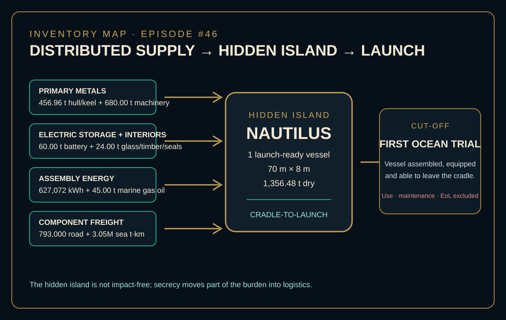
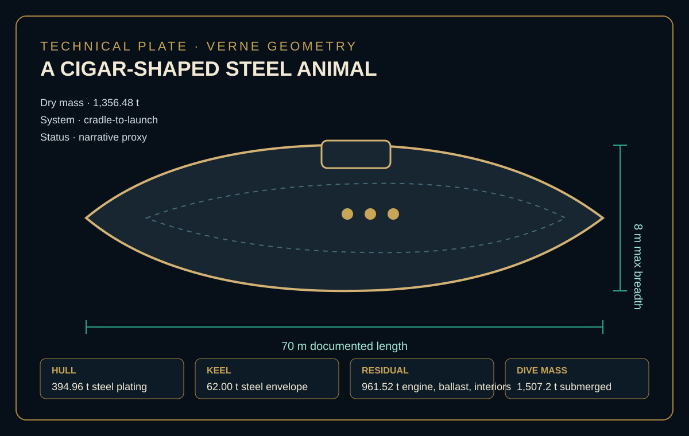
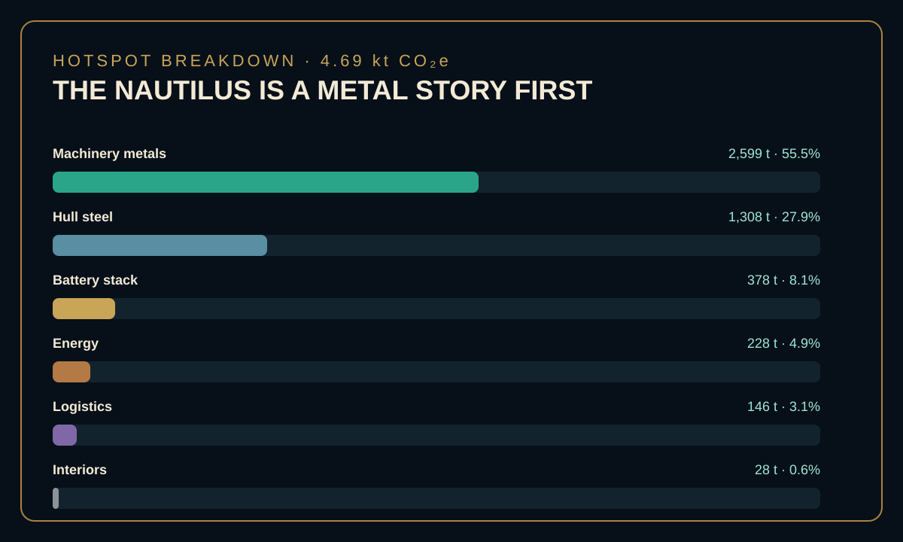

EPISODE #46 · MYTHS & LEGENDS
Nautilus
What is the footprint of Captain Nemo’s impossible submarine before it travels a single league?
THE SUBJECT
The voyage is the story. The vessel is the model.
The approved model stops at the first launch-ready condition: one complete electric submarine assembled at the hidden island and capable of beginning the 20,000-league mission. Use-phase propulsion, crew food and life support, maintenance, refits, end-of-life and avoided burdens remain outside the boundary.
Verne supplies the physical anchors used by the episode: a 70 m documented length, 8 m maximum breadth and 1,356.48 t dry displacement. The reconstruction then translates the impossible 1870 vessel into a modern cradle-to-launch inventory of metals, electric storage, interiors, fabrication energy, auxiliary marine gas oil and inbound freight.
The result is therefore a narrative proxy, not a claim about a measured historical submarine. The analytical control is transparency: the modern proxies remain named, traceable and separate from the narrative evidence.
70 m × 8 m
The documented length and maximum breadth anchor the physical reconstruction.
1,356.48 t dry
The dry vessel mass rises to 1,507.2 t in the reported submerged condition.
91.5% metals
Hull, machinery and battery blocks together represent 91.5% of the baseline footprint.
Launch cut-off
The boundary closes when the assembled vessel can leave the hidden island cradle for its first ocean trial.
VISUAL MODEL
From distributed supply to a hidden launch
The visual model keeps construction burdens separate from the voyage that follows.


LIFE CYCLE INVENTORY
The inventory is mostly metal
Contribution values below are either stated in the approved episode or directly calculated from the activity data and emission factors printed in it. No missing factor has been reconstructed.
| Stage | Component / activity | Activity data | Climate change | Modelling basis |
|---|---|---|---|---|
| Primary materials | Hull and keel primary steel | 456.96 t | 1,307.6 t CO₂e | S1 steel cans proxy · 2,861.583 kg CO₂e/t · DEFRA 2026. |
| Primary materials | Machinery and internal metal systems | 680.00 t | 2,598.9 t CO₂e | S2 metals primary · 3,821.949 kg CO₂e/t · DEFRA 2026. |
| Electric storage | Battery stack | 60.00 t | 378.5 t CO₂e | S3 Li-ion battery proxy · 6,308.000 kg CO₂e/t · DEFRA 2026. |
| Interiors | Glass, timber and seals | 24.00 t | 28 t CO₂e | Approved aggregated interiors contribution. Individual S4–S6 factor values are not printed in the episode. |
| Assembly | Shipyard electricity | 627,072 kWh | 82.1 t CO₂e | S7 UK electricity · 0.13096 kg CO₂e/kWh · DEFRA 2026. |
| Assembly | Auxiliary marine gas oil | 45.00 t | 146.0 t CO₂e | S8 marine gas oil · 3,245.304 kg CO₂e/t · DEFRA 2026. |
| Logistics | Sea freight to hidden island | 3.05M t·km | 45.1 t CO₂e | S9–S12 freight direct + WTT · sea factor 0.01478 kg CO₂e/t·km · DEFRA 2026. |
| Logistics | Road freight to ports | 793,000 t·km | 100.8 t CO₂e | S9–S12 freight direct + WTT · road factor 0.12715 kg CO₂e/t·km · DEFRA 2026. |
Included
Primary metals and battery stack, glazing/wood/seals, shipyard fabrication energy, auxiliary marine gas oil and road/sea component freight.
Excluded
Use-phase propulsion energy, crew food and life support, maintenance and refits, end-of-life and avoided burdens.
Transport conversion
Sea freight is 1,220 t × 2,500 km. Road freight is 1,220 t × 650 km. Both are modelled as t·km, not simple distance.
Proxy disclosure
The factor table labels S3 as a Li-ion battery proxy, while the episode’s proxy-disclosure callout refers to a sodium battery. This page preserves the stated S3 factor label and does not silently reconcile the wording difference.
HOTSPOT
The Nautilus is a metal story first
The large residual internal mass makes machinery metals the dominant burden before any propulsion energy is counted.

Main result
4.69 kt CO₂e
Per launch-ready Nautilus, before the voyage begins.
Machinery metals
2,599 t CO₂e · 55.5%
The residual internal metal systems are the dominant hotspot.
Metal blocks
91.5%
Hull, machinery and battery together dominate the baseline footprint.
Logistics
146 t CO₂e · 3.1%
The hidden island moves burden into freight, but does not control the result.
Sensitivity A · mass uncertainty
Lean hull → 4.04 kt CO₂e
Baseline → 4.69 kt CO₂e
Reinforced hull → 5.54 kt CO₂e
Only hull, machinery and battery mass blocks change: ×0.85 in the lean case and ×1.20 in the reinforced case. Factors, logistics, energy and minor materials remain fixed.
Sensitivity B · material origin
Recycled-metal route → 2.63 kt CO₂e
Baseline route → 4.69 kt CO₂e
High-intensity route → 5.76 kt CO₂e
Closed-loop/secondary proxies replace primary hull and mixed-metal factors in the low route; major metal and battery factors increase by 25% in the high route.
What changes the story
Material origin changes the total more than logistics. The hidden island matters, but the metallurgy decides the result.
Main modelling uncertainty
The unknown allocation inside Verne’s residual 961.52 t controls the mass sensitivity, while the choice of primary versus lower-carbon metal routes controls the material-origin sensitivity.
THE VERDICT
An impossible vessel still begins as a material bill. The model reaches 4.69 kt CO₂e before any operating energy is counted.